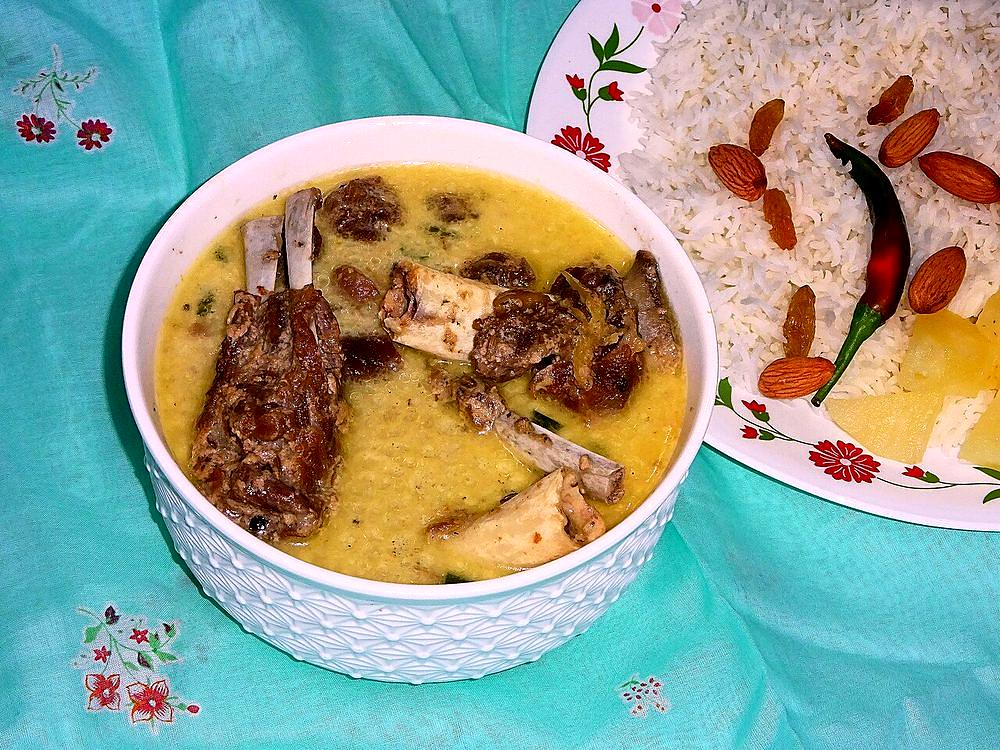

Contains: milk
Ingredients
Quantities for 4.
- 700g rib chops, on the bone Mutton
- 700ml full-fat Milkaab gosht means water-meat, but milk is what carries it
- 3 tbsp Ghee
- 6 cloves, lightly crushed Garlic
- 1 tbsp, tied in a square of muslin Fennel Seeds
- 1 tbsp Fennel Powder
- 1 tsp Dry Ginger Powder
- 4 green, bruised Cardamom
- 1, cracked Black Cardamom
- 4 Cloves
- 1 stick, 5cm Cinnamon
- 1 Bay Leaf
- 1 tsp White Pepperkeeps the gravy pale where black pepper would speck it
- 500ml Water
- to taste Salt
Cookware
stovetop
Checked against the ingredient list for ten allergens: milk, egg, fish, crustaceans, tree nuts, peanuts, sesame, mustard, soy and gluten. Brands vary, so read the label on anything new to you.
Before you start
- Tie the fennel seeds in muslin so they can be fished out later; loose seeds in the finished gravy are unpleasant to eat.
- Bring the milk to room temperature. Cold milk poured into a hot pan is the fastest way to make it catch.
- Trim heavy fat off the chops. This dish should be delicate, and rendered fat makes the milk greasy.
Method
- Bring the chops, water, garlic, bay leaf, both cardamoms, cloves, cinnamon, the muslin bag of fennel seeds and 1 tsp salt to a boil, then skim off the foam.
- Simmer covered 45 minutes, until the meat is tender and pulling from the bone, then uncover and boil the liquid down to about 150ml.Reducing the stock first concentrates the flavour; skip it and the milk simply dilutes everything.
- Remove the muslin bag and squeeze it out into the pan.
- Add the milk in three additions, letting each come back to a bare simmer before the next goes in.Three additions, and never a rolling boil. Milk added all at once and boiled hard will curdle around the meat.
- Stir in the fennel powder, dry ginger and white pepper.
- Simmer uncovered on low for 25 minutes, stirring the base every few minutes with a flat spoon, until the gravy thinly coats the back of it.Use a flat-ended spoon and scrape the base each time. Milk scorches there long before you can smell it.
- Heat the ghee separately until it is nut-brown and pour it over the pan, giving it one stir.
- Check the salt, rest 10 minutes off the heat and serve with plain rice or with a girda.
Safe temperatures: Whole cuts of mutton, beef and pork are done at 63°C / 145°F, rested 3 minutes. A long braise passes that well before the meat is tender. Reheat leftovers to 74°C / 165°F. FoodSafety.gov
Storage
Keeps 2 days refrigerated. Reheat on the lowest flame, stirring, and add a splash of milk to loosen; it will split if it boils.
Nutrition Low estimate
High protein: 43 g a serving, 41% of the calories
| Per serving472 g | Per 100 g | |
|---|---|---|
| Calories | 423 kcal | 90 kcal |
| Protein | 43.4 g | 9 g |
| Carbohydrate | 15.2 g | 3 g |
| of which sugars | 9.2 g | 2 g |
| Fibre | 3.5 g | 1 g |
| Fat | 20.7 g | 4 g |
| of which saturated | 10.6 g | 2 g |
| of which unsaturated | 8.0 g | 2 g |
Whey poured away when the milk is curdled means much of the weighed input is never eaten, so the real figures are likely lower. Nearest database match used for mutton. Estimated from raw ingredients using USDA FoodData Central.
More like this: Gluten-free Indian recipes · Kashmiri recipes
Times, yields, allergens and nutrition are guidance. Use your own judgement on doneness and on storing. More in About.